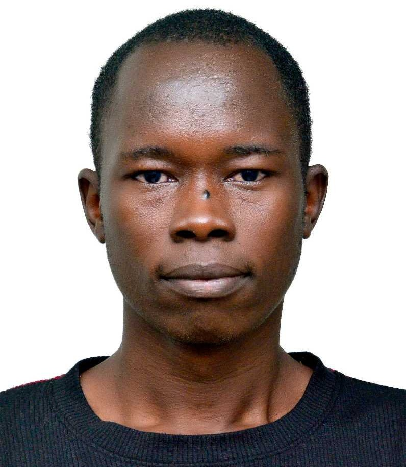

01 / MACHINING
Machining
Operating conventional lathes, milling machines, surface grinders and CNC milling machines.
I'm Okino Ceaser Lawrence, a Maintenance Technician and Machinist with practical experience in machining, fitting and mechanical problem-solving.

I work as a Maintenance Technician at Quality Plastics in Mukono. My experience includes mechanical troubleshooting, fitting, assembly and the operation of machining equipment. I'm committed to continuing to learn, improve and contribute to reliable operations.
National Diploma in Mechanical Engineering
National Certificate in Machining and Fitting
Operating conventional lathes, milling machines, surface grinders and CNC milling machines.
Mechanical troubleshooting, fitting and assembly, with a focus on dependable equipment.
Interpreting engineering drawings, precision machining and component fabrication, including plasma cutting.
From workshop practice to hands-on industrial maintenance.
Supporting mechanical maintenance and troubleshooting in an industrial setting.
Machined and fitted components from drawings, operated machining equipment, inspected dimensions, and supported maintenance and alignment.
Worked on machining, grinding, milling and gear-cutting, as well as fabrication, assembly and maintenance support.
Focused mainly on milling and lathe work, with grinding experience.
Participated in lathe machining, drilling, welding and fabrication of grass-cutting machines and maize millers, as well as foundry mould preparation and casting.
For professional opportunities and conversations.
ceaserlawrenceokino@gmail.com